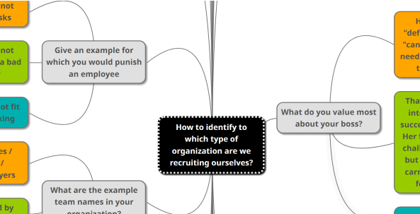

FesLe latest blog articles:

How to recruit an 8 Stances Scrum Master
In this article we'll share the approach we developed to recruit Scrum Masters using Competency-based recruitment process, Barry Overeem’s 8 stances of Scrum Master, and Behavioral Driven Development. [...]
Where do you really want to work? Orange vs. Green vs. Teal
In this article you will find answers to the following questions: What distinguishes some organizations from others? What impact can these differences have on your career and life? How do you know, when recruiting, if an organization is right for you?

How I've used Story Cubes too break ice between Teams from different countries
In this short article I will share my facilitation guide for a creative Ice Breaker exercise using Rory's Story Cubes® for teams working on the same product but in different locations.
How to recruit an 8 Stances Scrum Master
In this article Tomasz Moranski and myself will share the approach that we together with Mateusz Klimczyk developed to recruit Scrum Masters using Competency-based recruitment process, Barry Overeem’s 8 stances of Scrum Master, and Behavioral Driven Development.
Before you go any further you must know that we won't share our recruitment process questions :) Instead, we will tell you how to develop your own process.
Backstory:
The topic of recruitment of a Scrum Master isn’t something new. But when we faced the challenge to recruit new scrum masters in our company we knew there is space for improvements and that we want to create our own process. This conclusion emerged from our previous experience in being recruited for a Scrum Master position and from the approach on how does HR recruit experienced leaders.
The main flood in mainstream approach:
Most companies recruit scrum masters asking theoretical questions (like in the Agile Imposters 2.0 38 questions [0] ) or by performing hypothetical case studies scenarios during the interview meeting and asking the recruited person to imagine a situation and then looking for particular candidate behaviors (like in Case Studies for Conflict Resolution: A key element in civil rights training [3] ).
Although these methods bring value and can be helpful they introduce the following downsides:
- The answers on theoretical questions can be memorized and learned upfront with no practical experience whatsoever. So we have no clue if the candidate will really do the job.
- The hypothetical case-study scenarios during the interview don’t guarantee that the candidate will act in the same way in real life when faced with real situation involving people she will be working with. Additionally, in that approach we assume in advance that the best way on how to solve problems from the hypothetical scenarios is Our Way -which is simply not true (even if our solution worked in a certain situation, "You could not step twice into the same river"- Heraclitus).
What did we do differently:
We wanted to get true Scrum Masters. We wanted to get experienced people proven in field of Scrum and Agile. In order to achieve this we decided to create our Scrum Master's recruitment process in line with the Competency-based recruitment approach [2] .
Why do we call it BDD? :)
What we changed in the process is that we didn't start from building question first, but instead we started by defining expected behaviors.
In order to do so we created a competency map [4] based on Barry Overeem’s “The 8 Stances of a Scrum Master” described at Scrum.org [1] where he defines the Scrum Master as a Servant Leader, Facilitator, Coach, Manager, Mentor, Teacher, Impediment Remover, and Change Agent.
We knew what competencies we are looking for but we didn't knew what behaviors will define those competencies. We started to ask ourselves what behaviors do best define e.g a great facilitator who is a neutral person accepted by the group with no decision making, equipped with facilitation tools, helping the group identify potential solutions and improving the process of decision making, increasing the efficiency of meetings and following through with action points.
Surprisingly this was the hardest part. But when we finally defined the expected behaviors it was really easy to form proper questions around them. We used the Funnel [5] and S.T.A.R [6] [7] tools for that because they are great for checking the candidates practical experience.
Example: Facilitator - one of the expected behaviors: encourages people in the group to take an active part
- Give an example of a situation where you encourage people in the group to take an active part?
- What was the group's challenge?
- What approach did you choose? What actions did you undertake?
- What was the result?
This way we designed a checklist of questions that helped us evaluate our candidates. In addition, we solved another problem. Before our checklist, we evaluated every candidate with different questions relaying on our intuition. Now, we have one candidate profile build around what's most important for us, allowing us to continuously improve our process. Furthermore, these questions and behaviors have a great use for annual performance reviews.
Our experience in practice:
It turned out quite difficult to go through all the questions for all the 8 stances in a reasonable time. Luckily, some questions verified more then one stance at a time. We ordered the questions to maximize the amount of expected behaviors shared in one candidate's answer. TIP: prioritize the questions by the potential they share to expose the candidate's behaviors most.
Summary:
To create your own recruitment process go through these steps:
- Create a competency map for the Scrum Master Position in your company [4]
- Define what behaviors imply those competences [1]
- Prepare Funnel and S.T.A.R questions for those behaviors [5] [6] [7]
- Experiment what questions bring most value
- Gather candidate's answers to inspect and improve your process
Thanks for reading. If you have any questions and like the article, please comment.
Bibliography:
[0] Free Ebook: 47 Scrum Master Interview Questions to Identify Suitable Candidates
[1] The 8 Stances of a Scrum Master
[2] Competency-based recruitment
[3] CONFLICT RESOLUTION: CASE STUDIES
[4] Competency Mapping - A Search For Excellence
[5] Questioning Techniques (Funnel Questions)
[6] How to Use the STAR Interview Response Technique
[7] How To Master the STAR Method For Interview Questions
Article author: Błażej Drobniuch
Back to top Contact usWhere do you really want to work? Orange vs. Green vs. Teal
On average, people spend 90,000 hours at work [21] . It's over 10 years of life! The average working time in one company is about 4 years, but for the first employer many people decide to stay longer. That's why it's important to find the company that suits you best from the very beginning. How to accomplish this without comparison and reference point? What questions should you ask a potential employer during a recruitment interview to get to know them better?
In this article you will find answers to the following questions:
- What distinguishes some organizations from others?
- What impact can these differences have on your career and life?
- How do you know, when recruiting, if an organization is right for you?
First let's ask a question: How can we group organizations? A scientist Frederic Laloux has created a great organization classification placing them in successive generations going through the history of humankind.

Let's name the consecutive organization generations: RED: anarchistic like the mafia, AMBER: commanding like the army, public schools, and the Catholic Church, ORANGE: controlling like multinational companies, investment banks; GREEN: caring & paternalistic like culture driven organizations; TEAL: cellular & releasing like network organizations [1] .
Orange vs. Green vs. Teal
As for now, in 2020 most IT companies operate either within the Orange [2] , Green [3] or Teal [4] paradigm. Let's take a closer look and compare them in the table below:
So an orange organization is like a machine with a lot of controlling process and process imposed roles. People are seen like cogs, specialized to perform a specific task. Everybody must stay busy and resource management in excel sheets is a common associate when running out projects. The focus is on building the products.
Green organization, on the other hand, declares "We are family" and emphasize that the key to success are passionate people who are able to learn what's needed to deliver value. Teams are main building blocks and the principle is to build long-living teams. When optimizing green organization are more focused on delivering early value (instead of keeping everybody busy). Green organization concentrates on developing people, and a great product is only a side effect.
Teal organizations recognize that each of us is unique. And that the key is not to learn what is most needed but to discover your own talent and path, then follow it. Building blocks are small cellular groups discovering new ways of working and re-inviting the organization purpose.
Leaders [5] in orange, green and teal organization:
Managers in orange organization focus on governing constraints e.g. by creating process and telling people what to do. They use a combination of reward and punishment to induce a desired behavior (carrot and stick approach). The result is an over application of control approaches and not the recognition that not all systems are ordered. This makes people break rules to do their job well. Another common pattern is that in most cases burned out "cogs" (specialists that couldn't handle the pressure) are promoted to leaders positions, which has a huge negative impact on the company culture [22] and employee performance [18] .
Leaders in green organization are much more focused on creating a safe environment so people inside can demonstrate unsafe behavior. When a conflict arises, it can be immediately resolved by the persons concerned [17] . They take on the role of servant leaders who specify enabling constraints (e.g. by facilitating groups and coaching people to grow). The result is you get coherence with huge variation around it. That effectively allows locally valid solutions to emerge. The teams creates their own process and adjust it as needed. Decisions are pushed to the lowest level. Key leader competencies are soft skills.
Teal Leader's [6] role is to consistently hold the space and prevent people of going back into old habits of creating processes and hierarchy structures. Remind people of deeper assumptions by saying "This is not how we do things here". Teal leaders invite people to make decisions by their own. They also create context necessary to make those decisions. Teal is far away from anarchy and this is reflected in a range of practices that these organizations do differently. Teal deals with areas such as [7] [8] : decision making, organizational structure, staff functions, meetings, conflict management, project management, dismissal, strategy, recruitment, performance and change management, planning and budgets, targets and marketing in completely different ways [19] .
Authority in orange, green and teal:
Since orange organizations introduce meritocracy, knowledge is the key to promotion. This results in tree things: "I don't want to share my knowledge with others", "I don't want to show that I doesn't know something", "I'm better off showing others’ incompetence". Unfortunately that attitude results in a culture of fear and low transparency [15] [16] .
Green is more about peace and harmony, which can sometime result in not making difficult but key decisions. However, green is a paradigm that promotes culture of helpfulness which is the key to effective teams [14] . It's also easier to introduce more transparency which is a crucial aspect in order to react fast. Green is where Agile grows best [10] .
Teal is all about unleashing a human's full potential, that's why authority is build on wholeness. You work with people who can show up at work as their true selves. Not only ego but their deeper self. Not only masculine side but also feminine. Not only rational but also emotional, intuitive and even spiritual [20] .
How to determine if the organization you are recruiting to is orange green or teal?
Now a crucial question would be how to determine the paradigm in with a particular organizations operates. Here are listed 23 potential question [13] you should ask while recruiting to a particular organization to determine its paradigm. Those questions are a result of a brainstorming session performed on two specialists forums in Poland ("Trener Trenerowi Trenerem" [11] trainers forum, and "Wszyscy jesteśmy turkusowi" [12] teal organization forum). It's not that you have to ask all those questions. Some are even a little controversial and dangerous to ask. What's important is that you can find the answers on that questions while in a recruitment process without even asking them (just as side conversation). Another possibility is to ask friends who are currently working for this company or find someone from this company on LinkedIn and talk to them about it.
How are hiring and firing decisions made in your company?
- ORANGE: Someone at the top of the organization's pyramid (based on budget and the need for specialists)
- GREEN: A leader who works with people on a daily basis often as a coach (based on matching the culture of the organization and the team)
- TEAL: People who are working directly with candidate/that person make decisions
What are your company values?
- ORANGE: No values / there are values but the recruiter doesn't remember them / there are a lot of them and they are contradictory / cynicism in conversation about values
- GREEN: The values are not contradictory / the leader tells what is hidden under them / the CEO defines them
- TEAL: They are not clearly defined / are fluid and live their own life / people in the organization talk a lot about what the organization is guided by
If I wanted to introduce a new tool in the workplace that would require investments and training of people, what would have to happen for me to succeed?
- ORANGE: You must convince HiPPO (highest paid person's opinion)
- GREEN: You must involve others in the decision making (Consensus / Democracy)
- TEAL: Everyone can do this (after consultation with the specialists in that field)
How are decisions made to start and stop a project?
- ORANGE: Someone at the top of the organization's pyramid makes the decision
- GREEN: A business person supporting communications with the client, stakeholders and the development team makes the decision
- TEAL: People who are involved in creating the product make the decision
Who onboard employees on their tasks?
- ORANGE: Team Leader / Group Manager
- GREEN: Person from the team to which the candidate came (volunteer)
- TEAL: "Sherpa people" (colleagues responsible for your development)
How often as a manager do you ask employees for feedback on your work?
- ORANGE: Never / Only when the HR department expects it
- GREEN: Regularly during 1v1 / we have 360
- TEAL: I ask for feedback people I work with on daily basis
What is your company proud of?
- ORANGE: We are proud of our product / technology we use
- GREEN: We are proud that we are all family here
- TEAL: We are proud of how we are changing the world
What is the company's policy when it comes to payment transparency and salary raise?
- ORANGE: Lack of disclosure. Manager by recognition and budget
- GREEN: Pay grade levels according to seniority. Known to everyone. Periodic evaluation with the Leader
- TEAL: Everyone knows how much someone earns. If you think you deserve a raise, you just communicate it within the organization
Give an example for which you would punish an employee?
- ORANGE: Employee does not perform his tasks
- GREEN: Employee does not consult ideas / is a bad team player
- TEAL: Employee Does not fit our way of working
What do you value most about your boss?
- ORANGE: He gives 120% / "defends our group" / "can get budget when needed" / "reacts when there are fires"
- GREEN: That she express the interest both in my success and well being. Her feedback that can challenge you directly but at the same time carries personal care for your person
- TEAL: No boss
What are the example team names in your organization?
- ORANGE: Technical names / components / architectural layers
- GREEN: Names selected by team members
- TEAL: ???
Give an example for which you (the organization) would reward an employee
- ORANGE: He does overtime / does his job best
- GREEN: He is pro-active / helps others
- He looks for what he is best at and does it
What is the procedure when the employee has nothing to do?
- ORANGE: We assign tasks to him / transfer him to another project
- GREEN: Division of tasks is a matter of the team / let them use their free time for learning (if it's ok for the team)
- TEAL: The employee chooses what's most valuable in his opinion and does it (self-management).
What do you value most about your subordinates?
- ORANGE: That they do their job well
- GREEN: That they are growing (developing themselves)
- TEAL: N/A
What is the structure of your organization?
- ORANGE: Pyramid
- GREEN: Flat
- TEAL: Cellular
How often will I work on tasks with people outside my team?
- ORANGE: It happens / people work on several projects simultaneously here
- GREEN: Very rarely / the team works on its joint goal / we value teamwork and long-lived teams
- TEAL: ???
What job titles do the people I'll will be working with have?
- ORANGE: POSITIONS RESPONSIBLE FOR THE PROCESS (Product Manager, Error Manager, Quality Assurance...) [many different positions]
- GREEN: Only Software Developers (who have different competences needed to deliver working product) and supporting roles, e.g. Line Manager, Product Owner, HR [few positions]
- TEAL: No job titles (only pro forma) everyone has different roles the job titles are not important
Who during the recruitment asks technical questions?
- ORANGE: Your supervisor / asks both technical questions and checks candidate experience
- GREEN: A person from the team ask technical questions, the supervisor checks experience & cultural fit
- TEAL: A team member asks technical questions and checks experience. The last stage is one work day with the team
How would you describe the HR department in your company?
- ORANGE: Opinions without facts / Language we vs. them / cynicism
- GREEN: Language of facts / puzzled by the question / listing of HR tasks with ease
- TEAL: No HR department / Sourcing only
How are conflict situations resolved between people in the company?
- ORANGE: Your supervisor talks to the supervisor of the person you are in conflict with (mediation / escalation)
- GREEN: "As your supervisor, I will support you so that you can resolve the conflict directly with the person concerned"
- TEAL: We have a dedicated framework / way to resolve conflict in our organization
What is the company's CEO focused on?
- ORANGE: Makes key decisions
- GREEN: Crafts the organizational culture / talks a lot about values
- TEAL: Makes sure that the organization remains teal, invites people to make decisions and is the face of the company
[job description in the job offer]
- ORANGE: Extensive; many responsibilities; listed processes and policies
- GREEN: Short list of responsibilities; Company values listed
- TEAL: includes in the description that: "you apply to teal organization"
What is the access policy for tools and code base
- ORANGE: Very restricted, only process roles has rights
- GREEN: Everybody that works on code has access to codebase and tools
- TEAL: Everybody chosses their tools
Summary:
It's not that green is better than orange, and teal than green. It's about what do you really looking for yourself. I know people that feels best in green organization. I know people that feel best in orange organization. And I know people that are teal. If you seek structure and power go for orange. If you look for consensus and friendly work environment go for green. If you want to challenge yourself and are ready for a journey to discover yourself go for teal.
It's not that organizations are pure orange, green, teal. There always a mix of subcolors. Organizations can also change their colors in time but this is a topic for another article.
Article author: Błażej Drobniuch
Back to top Contact us
How I've used Story Cubes too break ice between Teams from different countries
In this short article I will share my facilitation guide for a creative Ice Breaker exercise using Rory's Story Cubes® for teams working on the same product but in different locations.
Backstory:
The team I've recently joined from Krakow, Poland was visiting our headquarters in Austria and meeting other people involved in the development of a game we just finished. We had planned a big retrospective and meetings related to the next important milestones.
What I needed was a way to create a safe and relaxing environment for me and other team members, especially new ones, and those not so comfortable in speaking English. My goal was to put our fears aside, build relationships, focus on our goals and recharge batteries after a long car trip. In order to achieve this, I've proposed to start with an Ice Breaker exercise.
I was politely warned:
"But please don't force us to touch each other"
Hence I knew they probably had previous experience with irrelevant, pointless, or poorly designed icebreakers. So in order to make it work it had to be fun, creative and non-physical.
I've searched trainers Facebook groups and found Mateusz Kałamarz (Design Thinking Facilitator) who shared his experience with Rory's Story Cubes®.
I only had to redefine the game mechanics to achieve what I've intended. Finally I've created a 15 minutes Ice Breaker which served its purpose surprisingly well.
About Rory's Story Cubes®:
"Rory's Story Cubes® is the iconic storytelling game that fosters imagination and connection across generations."[1]
"Rory’s Story Cubes® originated as a creative problem solving tool for adults, way back in 2004. Rory was a creativity trainer and coach, working with individuals and organisations to look at problems in different ways. The idea was conceived using an invention technique called ‘Advanced Civilisation’ (by Win Wenger)."[1]
Ice Breaker Facilitation guide:
Goals:
- integrate teams working on the same product
- get everyone involved 100% right from the start
- help new members get to know each other
- creative warm-up on the product topic
- begin an interesting conversation among participants
- practice English
- prevent another boring meeting
Handouts:
- 4x Rory's Story Cubes® sets (e.g stories, voyages, actions, fantasia),
- For each participant a Facilitation guide for the Ice Breaker exercise in A4 format.
Agenda:
- [3min] explaining the purpose and goals of the ice breaker, giving out handouts, introducing the Rory's Story Cubes®,
- [6min] part one (pairing up and storytelling),
- [6min] part two (sharing stories in a big circle).
Instructions part one (pairing up and storytelling):
- randomly take one STORY CUBE from the pull of 36 cubes on the table
- pair up with someone you know least
- roll the Cube dice
- your task is to learn a story from the life of your pair/mate related to the icon on the cube
- you've got 2 minutes each
- (if there is still time)* roll with your pair/mate two dices and create a story about the product you are developing basing on those two story cubes
Instructions part two (sharing stories in a big circle):
- gather in a circle with the rest of participants (next to your pair/mate)
- introduce your pair/mate
- tell what picture was on the dice
- tell what story did you learn about your pair/mate
- together with your pair/mate tell the short story about the product (If you had time to create it)
Facilitation Guidelines:
- Take your time to introduce Rory's Story Cubes® (they arouse curiosity so the participants don't focus on the instructions).
- It's common that participants ask the facilitator what particular image on the cube means. Tip: Just tell them it's up to them.
- When working in pairs make sure they understand the task and stay focused, remind them about the additional task to "create a story about the product you are developing" when they still have some time left.
- When presenting the stories in groups make sure they introduce their pair/mate by name, and show the whole group what was their picture on the Story Cubes.
Summary:
The Ice Breaker worked really well and I received positive feedback. We had a lot of fun, The Ice was broken and we gained new energy to follow up with the big retrospective. I hope it will work similar for you.
Other scenarios for the ice breaker:
- team retrospectives
- on-boarding of new team members
- brainstorming sessions
- group coaching sessions
- joining new team as a Leader, Scrum Master etc.
Please let me know if this article was helpful in the comments below.
Bibliography:
Article author: Błażej Drobniuch
Back to top Contact us